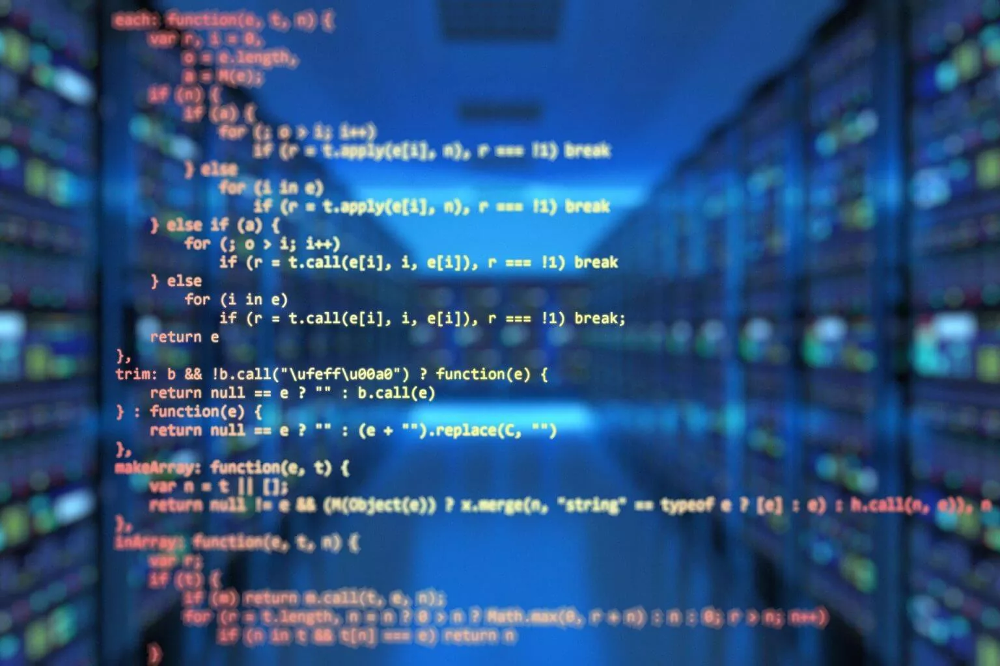
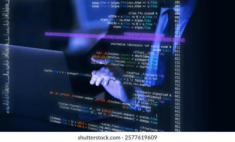

Programar: Más Allá del Código, Una Nueva Forma de Pensar
La programación es el proceso de crear instrucciones que una
computadora puede entender y ejecutar. Estas instrucciones,
conocidas como código, permiten desde acciones simples como mostrar
un mensaje en pantalla hasta operaciones complejas como gestionar
redes sociales, realizar diagnósticos médicos o simular el clima.
Hoy en día, la programación no solo es una habilidad técnica, sino
también una forma de pensar. Hoy en día, la programación solo es una
habilidad técnica, sino también una forma de pensar.
A medida que la tecnología avanza, la programación se convierte en
una herramienta fundamental no solo para desarrolladores, sino
también para profesionales de todas las áreas. Entender cómo
funciona el software nos permite tomar decisiones más informadas,
automatizar tareas rutinarias y desarrollar soluciones creativas a
problemas del mundo real. Además, aprender a programar fomenta
habilidades como el pensamiento lógico, la resolución de problemas y
la perseverancia. En un mundo cada vez más digital, la programación
ya no es exclusiva de los ingenieros: es una alfabetización esencial
del siglo XXI.
Comentarios
Deja un comentaio
El Código que Mueve al Mundo: La Era de la Programación
Desde los asistentes virtuales hasta las redes sociales, desde los
videojuegos hasta los algoritmos que gestionan el tráfico de una
ciudad, todo lo que nos rodea funciona gracias a líneas de código.
En este artículo, exploramos qué significa programar, cómo han
evolucionado los lenguajes con el tiempo y por qué esta habilidad se
ha convertido en una de las más valiosas del siglo XXI.
Programar ya no se limita a crear software para computadoras; hoy en
día, está en el corazón de casi todas las innovaciones tecnológicas.
Los lenguajes de programación han evolucionado desde simples
comandos en máquinas hasta plataformas versátiles que permiten
construir inteligencia artificial, diseñar experiencias interactivas
o analizar grandes volúmenes de datos. Con esta evolución, también
ha crecido la necesidad de comprender cómo funcionan estos sistemas,
no solo para desarrollarlos, sino para convivir con ellos de forma
crítica y creativa. En un entorno donde lo digital es omnipresente,
aprender a programar es abrir una puerta al futuro.

Comentarios
Deja un comentaio
Programar: Donde la Lógica se Encuentra con la Creatividad
Pensamiento lógico, estructura y creatividad: el corazón de la
programación A menudo se imagina la programación como un conjunto
rígido de instrucciones, lleno de símbolos abstractos y reglas
inflexibles. Pero más allá del código visible, hay algo fundamental
que le da vida: el pensamiento lógico.
No todo funciona en el primer intento, en un dado caso este código
deberá ser modificado. Los errores son parte del proceso, y cada
intento fallido abre la puerta a una mejor comprensión. Detrás de
cada línea de código hay una mente que observa, analiza y crea. La
programación es una danza entre precisión y originalidad, donde cada
solución es única y cada error es una oportunidad para crecer.
Aprender a programar no solo implica dominar una sintaxis, sino
también desarrollar la paciencia para iterar, la curiosidad para
explorar y la confianza para fallar. En este camino, los
programadores no solo construyen software: construyen maneras nuevas
de pensar y de ver el mundo.
Comentarios
Deja un comentaio
Del Pensamiento a la Pantalla: El Poder Creativo de Programar
Todo lo que se ve en una página web, una aplicación o un juego
comenzó con una idea: una necesidad, una curiosidad, una
inspiración. La programación es el puente entre esa ideabstracta y
su materialización digital.
Escribir código permite transformar pensamientos en botones que
responden, gráficos que se mueven y sistemas que resuelven problemas
reales. Cada proyecto digital comienza con una chispa: una visión
que, gracias al código, toma forma en la pantalla. Desde los colores
y animaciones de una interfaz hasta los cálculos que gestionan un
sistema complejo, todo nace de líneas escritas con propósito.
Programar no es solo una cuestión técnica, es un acto de creación.
Es la capacidad de imaginar algo que no existe y construirlo paso a
paso, probando, corrigiendo y refinando. Así, las ideas dejan de ser
abstractas para convertirse en experiencias interactivas que otras
personas pueden ver, tocar y usar.
Comentarios
Deja un comentaio
El Código: La Arquitectura Invisible del Mundo Digital
Imagina una ciudad sin mapas, sin reglas de tránsito, sin
indicaciones claras. Sería caótica. Así sería la tecnología sin
programación: desordenada, ineficiente, impredecible. El código
actúa como una estructura invisible que da orden, propósito y
funcionalidad a lo que usamos a diario.
Al igual que una ciudad bien planificada permite que las personas se
muevan con seguridad y eficiencia, la programación establece rutas
claras para que la tecnología funcione correctamente. Cada línea de
código define comportamientos, establece límites y crea conexiones.
Sin esta base lógica, nuestras aplicaciones, sistemas y dispositivos
serían solo estructuras vacías sin coordinación ni propósito. Así
como un ingeniero diseña puentes seguros, los programadores
construyen puentes entre ideas y acciones concretas que mejoran la
vida cotidiana de millones de personas.

Comentarios
Deja un comentaio
Programar es Aprender a Aprender: La Clave Está en la Adaptación
En programación no todo está escrito en piedra. La tecnología
cambia, los lenguajes evolucionan, las buenas prácticas se renuevan.
Por eso, más que memorizar comandos, programar significa adaptarse,
investigar, experimentar y mejorar continuamente.
Ningún programador lo sabe todo. Ninguna persona que inicia conoce
todas las sintaxis, reglas o buenas prácticas. Por eso, aprender a
programar implica desarrollar la habilidad de investigar, de
formular preguntas precisas, de leer documentación y extraer lo
importante. Más allá del conocimiento técnico, lo que realmente
define a un buen programador es su capacidad de adaptación. Las
herramientas cambian, pero la mentalidad de aprendizaje constante
permanece. Cada nuevo error es una oportunidad para investigar, cada
duda es una invitación a descubrir algo nuevo. En lugar de buscar
dominarlo todo de una vez, quienes programan aprenden a moverse en
la incertidumbre con confianza, a construir sobre lo que ya saben y
a crecer con cada línea escrita, corregida o descartada. En el
fondo, programar es entrenar la mente para nunca dejar de
evolucionar.